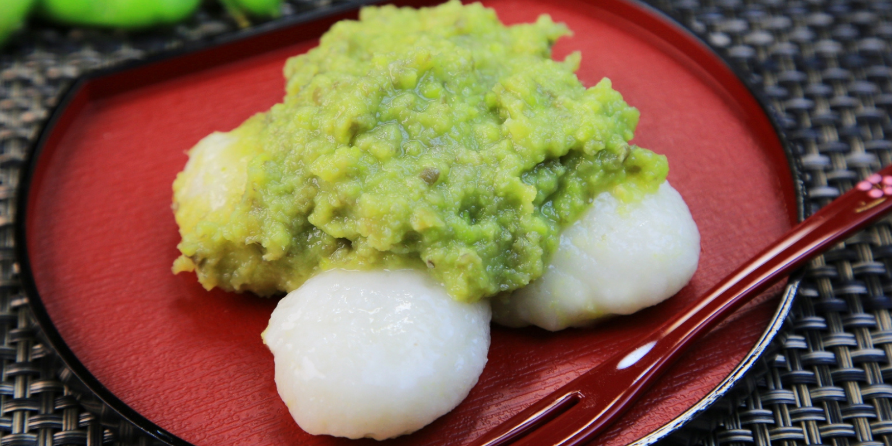

仙台伝統の味を、
心を込めて。
厳選された枝豆を丁寧にすり潰し、もち米と合わせる。素朴でありながら奥深い、格別な味わいをお届けします。ずんだ餅本舗は、この伝統の味を守り、現代に伝えることを使命としています。
ずんだの魅力を知る

🌱 ずんだとは？
東北に伝わる、生命力あふれる緑の餡「ずんだ」は、主に東北地方、特に仙台を擁する宮城県で古くから愛されてきた伝統的な食材です。茹でて皮を剥いた枝豆（未成熟な大豆）を丁寧にすりつぶし、砂糖などを加えて作る餡のことを指します。
その鮮やかな緑色と、枝豆特有の豊かな風味と粒感が特徴で、お餅に絡めた「ずんだ餅」として食されるのが最も一般的です。また、夏の旬の時期に味わう、昔ながらの贅沢な味覚として親しまれています。
📍 店舗情報
皆様のご来店を心よりお待ちしておりますJR仙台駅より徒歩5分。旅の疲れを癒す、和の空間でずんだ餅をご賞味ください。お土産も豊富にご用意しております。
- 住所: 宮城県仙台市青葉区中央1丁目1-1 (仙台駅付近を想定)
- アクセス: JR仙台駅 西口より 徒歩5分
- 営業時間: 10:00 〜 19:00 (年中無休)